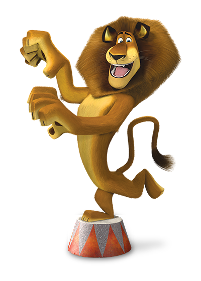

<
AlexTheLion
Alex The Lion!

<Alex (born as Alakay) is a main character in the Madagascar franchise. He is an African lion who was shortly raised in an African wildlife reserve, before being captured by poachers, and eventually end up being sent to the Central Park Zoo becoming one of the most popular exhibits in the zoo. He is the protagonist of the films.